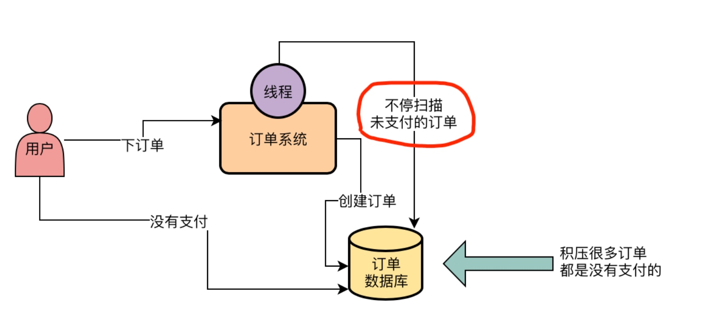
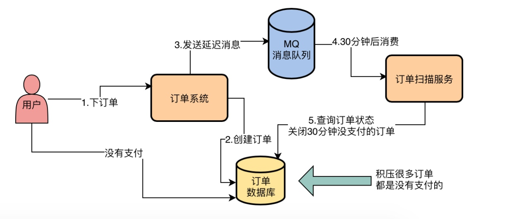
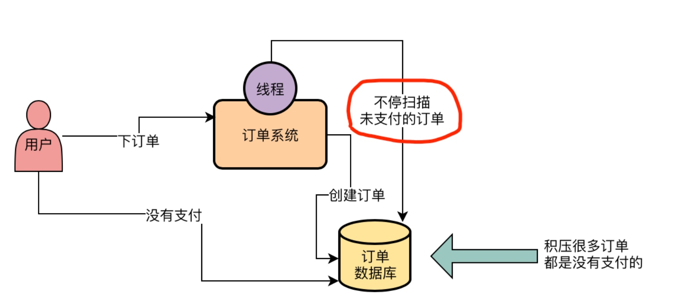
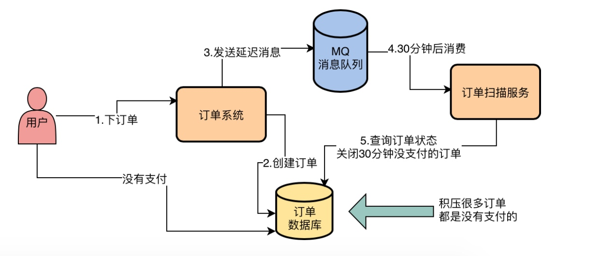
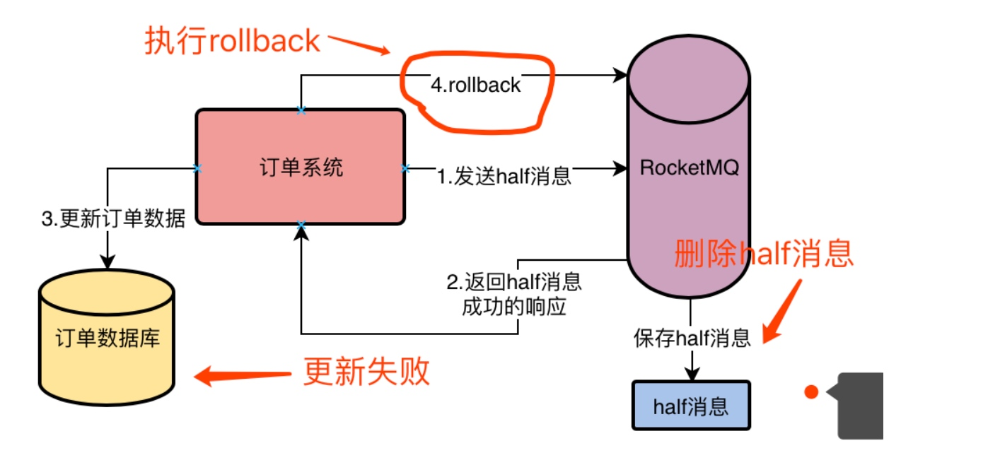
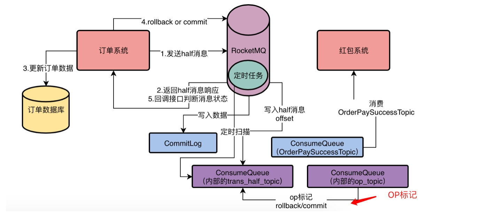

优化订单的定时退款扫描问题
以前的订单

不足
- 一个原因是未支付状态的订单可能是比较多的，然后你需要不停的扫描他们，可能每个未支付状态的订单要被扫描多遍，才会发现他已经超过 30 分钟没支付了。
- 另外一个是很难去分布式并行扫描你的订单。因为假设你的订单数据量特别的多，然后你要是打算用多台机器部署订单扫描服务，但是每台机器扫描哪些订单？怎么扫描？什么时候扫描？这都是一系列的麻烦问题。
改进后


生命的意义是成为你自己！






后台有定时任务，定时任务会去扫描 RMQ_SYS_ TRANS_HALF_ TOPIC 中的 Half 消息，如果你超过一定时间还是 half 消息，他会回调订单系统的接口，让你判断这个 half 消息是要 rollback 还是 commit



Reverse a singly linked list.
Example:
Input: 1->2->3->4->5->NULL
Output: 5->4->3->2->1->NULL
class Solution {
public:
ListNode* reverseList(ListNode* head) {
ListNode* pre = nullptr;
while (head) {
ListNode* next = head->next;
head->next= pre;
pre = head;
head = next;
}
return pre;
}
};
Reverse a linked list from position m to n. Do it in one-pass.
Note: 1 ≤ m ≤ n ≤ length of list.
Example:
Input: 1->2->3->4->5->NULL, m = 2, n = 4
Output: 1->4->3->2->5->NULL
struct ListNode {
int val;
ListNode *next;
ListNode(int x) : val(x), next(NULL) {}
};
static int x = []() {std::ios::sync_with_stdio(false); cin.tie(0); return 0; }();
class Solution
{
public:
ListNode* reverseBetween(ListNode* head, int m, int n)
{
if (head == nullptr || head->next == nullptr ||
m >= n || m < 0 || n < 0)
{
return head;
}
ListNode* h = new ListNode(-1);
h->next = head;
ListNode* pre = h;
ListNode* cur = head;
int i = 1;
for (; i < m && cur != nullptr; ++i)
{
pre = cur;
cur = cur->next;
}
ListNode* t1 = pre;
ListNode* t2 = cur;
for (; i <= n && cur != nullptr; ++i)
{
ListNode* lat = cur->next;
cur->next = pre;
pre = cur;
cur = lat;
}
t1->next = pre;
t2->next = cur;
return h->next;
}
};
Given a sorted linked list, delete all duplicates such that each element appear only once.
Example 1:
Input: 1->1->2
Output: 1->2
class Solution {
public:
ListNode* deleteDuplicates(ListNode* head) {
ListNode *cur = head;
while (cur && cur->next) {
if (cur->val == cur->next->val) {
cur->next = cur->next->next;
} else {
cur = cur->next;
}
}
return head;
}
};
Given a linked list and a value x , partition it such that all nodes less than x come before nodes greater than or equal to x.
You should preserve the original relative order of the nodes in each of the two partitions.
For example,
Given 1->4->3->2->5->2 and x = 3,
return 1->2->2->4->3->5.
就是将所有小于给定值的节点取出组成一个新的链表，此时原链表中剩余的节点的值都大于或等于给定值，只要将原链表直接接在新链表后即可
class Solution {
public:
ListNode* partition(ListNode* head, int x) {
ListNode node1(0);
ListNode node2(0);
ListNode* p1 = &node1;
ListNode* p2 = &node2;
while (head) {
if (head->val < x) {
p1->next = head;
p1 = p1->next;
} else {
p2->next = head;
p2 = p2->next;
}
head = head->next;
}
p2->next = nullptr;
p1->next = node2.next;
return node1.next;
}
};
Given a singly linked list, group all odd nodes together followed by the even nodes. Please note here we are talking about the node number and not the value in the nodes.
You should try to do it in place. The program should run in O(1) space complexity and O(nodes) time complexity.
Example 1:
Input: 1->2->3->4->5->NULL
Output: 1->3->5->2->4->NULL
func oddEvenList(head *ListNode) *ListNode {
if head == nil {
return head
}
odd := head
evenHead := head.Next
even := evenHead
for even != nil && even.Next != nil {
odd.Next = even.Next
odd = odd.Next
even = odd.Next
even = even.Next
}
odd.Next = evenHead
return head
}
Input: (2 -> 4 -> 3) + (5 -> 6 -> 4)
Output: 7 -> 0 -> 8
Explanation: 342 + 465 = 807.
class Solution {
public:
ListNode* addTwoNumbers(ListNode* l1, ListNode* l2) {
ListNode node(0), *p = &node;
int extra = 0;
while (l1 || l2 || extra) {
if (l1) extra += l1->val, l1 = l1->next;
if (l2) extra += l2->val, l2 = l2->next;
p->next = new ListNode(extra % 10);
extra /= 10;
p = p->next;
}
return node.next;
}
};
Follow up:
What if you cannot modify the input lists? In other words, reversing the lists is not allowed.
Example:
Input: (7 -> 2 -> 4 -> 3) + (5 -> 6 -> 4)
Output: 7 -> 8 -> 0 -> 7
class Solution {
public:
ListNode* addTwoNumbers(ListNode* l1, ListNode* l2) {
stack<int> v1, v2;
while (l1) v1.push(l1->val), l1 = l1->next;
while (l2) v2.push(l2->val), l2 = l2->next;
int extra = 0;
ListNode dummy, *pre = nullptr;
while (!v1.empty() || !v2.empty() || extra) {
if (!v1.empty()) extra += v1.top(), v1.pop();
if (!v2.empty()) extra += v2.top(), v2.pop();
ListNode* p = new ListNode(extra % 10);
extra /= 10;
p->next = pre;
pre = p;
}
return pre;
}
};
Remove all elements from a linked list of integers that have value val.
Example
Given: 1 -- > 2 --> 6 --> 3 --> 4 --> 5 --> 6, val = 6
Return: 1 -- > 2 --> 3 --> 4 --> 5
class Solution {
public:
ListNode* removeElements(ListNode* head, int val)
{
ListNode* h = new ListNode(-1);
h->next = head;
ListNode *cur = h;
while (cur->next != nullptr)
{
ListNode* delNode = cur->next;
if (delNode->val == val)
{
cur->next = delNode->next;
delete delNode;
}
else
{
cur = cur->next;
}
}
ListNode* retNode = h->next;
delete h;
return retNode;
}
};
class Solution {
public:
ListNode* deleteDuplicates(ListNode* head) {
if (!head || !head->next) return head;
ListNode *dummy = new ListNode(-1), *pre = dummy;
dummy->next = head;
while (pre->next) {
ListNode *cur = pre->next;
while (cur->next && cur->next->val == cur->val) {
cur = cur->next;
}
if (cur != pre->next) pre->next = cur->next;
else pre = pre->next;
}
return dummy->next;
}
};
Input: 1->2->4, 1->3->4
Output: 1->1->2->3->4->4
class Solution {
public:
ListNode* mergeTwoLists(ListNode* l1, ListNode* l2) {
ListNode node(0), *p = &node;
while (l1 && l2) {
if (l1->val < l2->val) {
p->next = l1;
l1 = l1->next;
} else {
p->next = l2;
l2 = l2->next;
}
p = p->next;
}
p->next = l1 ? l1 : l2;
return node.next;
}
};
Example:
Given this linked list: 1->2->3->4->5
For k = 2, you should return: 2->1->4->3->5
For k = 3, you should return: 3->2->1->4->5
class Solution {
public:
ListNode* reverseKGroup(ListNode* head, int k) {
ListNode dumy(0), *pre = &dumy, *cur = &dumy;
dumy.next = head;
int num = 0;
while (cur = cur->next) num++;
while (num >= k) {
cur = pre->next;
for (int i = 1; i < k; i++) {
ListNode* t = cur->next;
cur->next = t->next;
t->next = pre->next;
pre->next = t;
}
pre = cur;
num -= k;
}
return dumy.next;
}
};
Sort a linked list using insertion sort.
Input: 4->2->1->3
Output: 1->2->3->4
class Solution {
public:
ListNode* insertionSortList(ListNode* head) {
ListNode* dummy = new ListNode(0);
dummy -> next = head;
ListNode *pre = dummy, *cur = head;
while (cur) {
if ((cur -> next) && (cur -> next -> val < cur -> val)) {
while ((pre -> next) && (pre -> next -> val < cur -> next -> val)) {
pre = pre -> next;
}
ListNode* temp = pre -> next;
pre -> next = cur -> next;
cur -> next = cur -> next -> next;
pre -> next -> next = temp;
pre = dummy;
}
else {
cur = cur -> next;
}
}
return dummy -> next;
}
};
Sort a linked list in O ( n log n ) time using constant space complexity.
Example 1:
Input: 4->2->1->3
Output: 1->2->3->4
Example 2:
Input: -1->5->3->4->0
Output: -1->0->3->4->5
class Solution {
public:
ListNode* sortList(ListNode* head) {
if (!head || !head->next) return head;
ListNode *slow = head, *fast = head, *pre = head;
while (fast && fast->next) {
pre = slow;
slow = slow->next;
fast = fast->next->next;
}
pre->next = NULL;
return merge(sortList(head), sortList(slow));
}
ListNode* merge(ListNode* l1, ListNode* l2) {
ListNode *dummy = new ListNode(-1);
ListNode *cur = dummy;
while (l1 && l2) {
if (l1->val < l2->val) {
cur->next = l1;
l1 = l1->next;
} else {
cur->next = l2;
l2 = l2->next;
}
cur = cur->next;
}
if (l1) cur->next = l1;
if (l2) cur->next = l2;
return dummy->next;
}
};
Supposed the linked list is 1 -> 2 -> 3 -> 4 and you are given the third node with value 3, the linked list should become 1 -> 2 -> 4 after calling your function.
class Solution {
public:
void deleteNode(ListNode* node) {
node->val = node->next->val;
ListNode *tmp = node->next;
node->next = tmp->next;
delete tmp;
}
};
Given a list, rotate the list to the right by k places, where k is non-negative.
For example:
Given 1->2->3->4->5->NULL and k = 2,
return 4->5->1->2->3->NULL.
class Solution {
public:
ListNode *rotateRight(ListNode *head, int k) {
if (!head) return NULL;
int n = 0;
ListNode *cur = head;
while (cur) {
++n;
cur = cur->next;
}
k %= n;
ListNode *fast = head, *slow = head;
for (int i = 0; i < k; ++i) {
if (fast) fast = fast->next;
}
if (!fast) return head;
while (fast->next) {
fast = fast->next;
slow = slow->next;
}
fast->next = head;
fast = slow->next;
slow->next = NULL;
return fast;
}
};
Given a singly linked list L : L 0→ L 1→…→ L n -1→ L n,
reorder it to: L 0→ L n → L 1→ L n -1→ L 2→ L n -2→…
You may not modify the values in the list's nodes, only nodes itself may be changed.
Example 1:
Given 1->2->3->4, reorder it to 1->4->2->3.
Example 2:
Given 1->2->3->4->5, reorder it to 1->5->2->4->3.
func middleNode(head *ListNode) *ListNode {
slow, fast := head, head
for fast.Next != nil && fast.Next.Next != nil {
slow = slow.Next
fast = fast.Next.Next
}
return slow
}
func reverse(head *ListNode) *ListNode {
var pre *ListNode = nil
for head != nil {
next := head.Next
head.Next = pre
pre = head
head = next
}
return pre
}
func mergeList(l1, l2 *ListNode){
var p1, p2 *ListNode
for l1 != nil && l2 != nil {
p1 = l1.Next
p2 = l2.Next
l1.Next = l2
l1 = p1
l2.Next = l1
l2 = p2
}
}
func reorderList(head *ListNode) {
if head == nil {
return
}
mid := middleNode(head)
l1 := head
l2 := mid.Next
mid.Next = nil
l2 = reverse(l2)
mergeList(l1, l2)
}
Given a singly linked list, determine if it is a palindrome.
Example 1:
Input: 1->2
Output: false
Example 2:
Input: 1->2->2->1
Output: true
class Solution {
public:
ListNode* reverse(ListNode* head) {
ListNode* pre = nullptr, *next = nullptr;
while (head) {
next = head->next;
head->next = pre;
pre = head;
head = next;
}
return pre;
}
bool isPalindrome(ListNode* head) {
if (!head || !head->next) return true;
ListNode* fast = head, *slow = head;
while (fast->next && fast->next->next) {
slow = slow->next;
fast = fast->next->next;
}
ListNode* mid = slow->next;
ListNode* rhead = reverse(mid);
while (rhead) {
if (rhead->val != head->val) return false;
rhead = rhead->next;
head = head->next;
}
return true;
}
};

// Mutex implements the sync Locker interface with etcd
type Mutex struct {
s *Session //上面的Session struct
pfx string //前缀
myKey string //key
myRev int64 //Revision
hdr *pb.ResponseHeader
}
func NewMutex(s *Session, pfx string) *Mutex {
return &Mutex{s, pfx + "/", "", -1, nil}
}
// Lock locks the mutex with a cancelable context. If the context is canceled
// while trying to acquire the lock, the mutex tries to clean its stale lock entry.
func (m *Mutex) Lock(ctx context.Context) error {
s := m.s //上面的Session struct
client := m.s.Client()
//m.pfx是前缀，比如"myresource/lock/"
//s.Lease()是一个64位的整数值，etcd v3引入了lease（租约）的概念，concurrency包基于lease封装了session，
//每一个客户端都有自己的lease，也就是说每个客户端都有一个唯一的64位整形值
//m.myKey类似于"myresource/lock/12345"
m.myKey = fmt.Sprintf("%s%x", m.pfx, s.Lease())
//etcdv3新引入的多键条件事务，替代了v2中Compare-And-put操作。
//etcdv3的多键条件事务的语意是先做一个比较（compare）操作，
//如果比较成立则执行一系列操作，如果比较不成立则执行另外一系列操作。
//接下来的这部分实现了如果不存在这个key，则将这个key写入到etcd，如果存在则读取这个key的值这样的功能。
//下面这一句，是构建了一个compare的条件，比较的是key的createRevision（createRevision是表示这个key创建时被分配的这个序号。
//当key不存在时，createRevision是0。），如果revision是0，则存入一个key，如果revision不为0，则读取这个key。
//revision是etcd一个全局的序列号,全局唯一且递增，每一个对etcd存储进行改动都会分配一个这个序号，在v2中叫index
cmp := v3.Compare(v3.CreateRevision(m.myKey), "=", 0) //cmp 比较Revision, 当key不存在时，createRevision是0。
// put self in lock waiters via myKey; oldest waiter holds lock
put := v3.OpPut(m.myKey, "", v3.WithLease(s.Lease()))
// reuse key in case this session already holds the lock
get := v3.OpGet(m.myKey)
// 如果revision为0，则存入，否则获取
resp, err := client.Txn(ctx).If(cmp).Then(put).Else(get).Commit()
if err != nil {
return err
}
// 本次操作的revision
m.myRev = resp.Header.Revision
// 操作失败，则获取else返回的值，即已有的revision
if !resp.Succeeded {
m.myRev = resp.Responses[0].GetResponseRange().Kvs[0].CreateRevision
}
ownerKey := resp.Responses[1].GetResponseRange().Kvs
if len(ownerKey) == 0 || ownerKey[0].CreateRevision == myRev {
m.hdr = resp.Header
return nil
//成功获取锁
}
//如果上面的code操作成功了，则myRev是当前客户端创建的key的revision值。
//waitDeletes等待匹配m.pfx （"/myresource/lock/"）这个前缀（可类比在这个目录下的）并且createRivision小于m.myRev-1所有key被删除
//如果没有比当前客户端创建的key的revision小的key，则当前客户端者获得锁
//如果有比它小的key则等待，比它小的被删除
hdr, werr = waitDeletes(ctx, client, m.pfx, m.myRev-1)
// release lock key if wait failed
if werr != nil {
m.Unlock(client.Ctx())
} else {
m.hdr = hdr
}
return werr
}

一个 key 的索引项内存开销跟你的 key 大小、保存的历史版本数、compact 策略有关。为了避免内存索引项占用过多的内存，key 的长度不应过长，同时你需要配置好合理的压缩策略